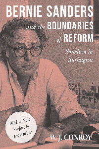

<HTML><head><script> (function(i,s,o,g,r,a,m){i['GoogleAnalyticsObject']=r;i[r]=i[r]||function(){  (i[r].q=i[r].q||[]).push(arguments)},i[r].l=1*new Date();a=s.createElement(o),  m=s.getElementsByTagName(o)[0];a.async=1;a.src=g;m.parentNode.insertBefore(a,m)   })(window,document,'script','//www.google-analytics.com/analytics.js','ga');   ga('create', 'UA-43183130-1', 'temple.edu');   ga('send', 'pageview'); </script><title>W. J. Conroy: Bernie Sanders and the Boundaries of Reform - Print</TITLE><link rel="stylesheet" href="../general.css" type="text/css"><SCRIPT LANGUAGE = JAVASCRIPT></SCRIPT></HEAD><BODY LINK="#3152A5" VLINK="#3152A5" ALINK=Gray BGCOLOR=White><CENTER><P CLASS=intro><br>A reissued edition of a significant case study of the achievements and failures of Bernard Sanders' radical administration in 1980s Burlington, VT<br><br></P></CENTER><br>&nbsp;<!--none//--><Table width="100%" border=0 cellspacing=5><tr><td width="175" align="center"></td><td><h1 class = "booktitle">Bernie Sanders and the Boundaries of Reform</h1> <h1 class = "subtitle">Socialism in Burlington</h1><h3 class="author">W. J. Conroy</h3><p class="info">paper EAN: 978-1-4399-1480-9 (ISBN:1-4399-1480-X)</br>$19.95, Feb 17, <font color=#990033>Available</font><br><p class="info"><p class="info">Electronic Book EAN: 978-1-4399-1481-6 (ISBN:1-4399-1481-8)</br>$12.95, Aug 16, <font color=#990033>Available</font><br><p class="info">278 pp, 6 x  9 </p></td></tr></table></P></td></tr></table><BR><BLOCKQUOTE></BLOCKQUOTE><P><P><p>Today, Bernie Sanders is a household name, a wildly popular presidential candidate and an icon for progressive Democrats in the United States. But back in the 1980s, this "democratic socialist"&#8212;though some folks would prefer the term "social democrat"&#8212;was mayor of Burlington, Vermont, where his administration attempted radical reforms. Some efforts were successful, but when a waterfront deal failed, it was not due to Sanders' efforts; he would rather compromise and have a net gain than be an ideological purist.<br><p>In his preface to this&nbsp;reissue&nbsp;of&nbsp;the 1990&nbsp;book, <i>Challenging the Boundaries of Reform</i>, W. J. Conroy reflects on the recent legacy of Sanders, his Agenda for America, and his appeal to young voters. His book then looks back to identify Sanders' experience in Burlington by examining several case studies that unfolded amidst a conservative trend nationally, an unsympathetic state government, and a hostile city council. <br><p>Ultimately, Conroy asks what lessons can be drawn from the case of Burlington that would aid the American left in its struggle to capture both government and civil society?<br><P CLASS="top"><A HREF="#top">BACK TO TOP</A></P><P><h2  class="inpageheading"><A NAME="excerpt"></a>Excerpt</h2><p><i>"This is not a book about Bernie Sanders, and yet this is a book about Bernie Sanders. Originally published in 1990 and based on my doctoral dissertation for Fordham University, </i>Bernie Sanders and the Boundaries of Reform<i> is a 1980s case study of how much autonomy the local state (i.e., the city government) has within the external constraints of the capitalist system of private enterprise and the federalist system of government. I chose this case study as a unique opportunity to examine a socialist mayor and several radical left city commissioners (the Progressive Coalition) who were elected to office as the nation was veering right with the agenda of Ronald Reagan. It was the anomalous character of the city government of Burlington, Vermont, that drew me to the case. The Progressive Coalition never captured a majority of seats on the city council while Sanders was mayor, but there is little to suggest that the results would have differed much even if it had."<br /></i>&#8212;from the <b>Preface to the 2016 Edition</b><br><br><P CLASS="top"><A HREF="#top">BACK TO TOP</A></P></p><P></p><p><h2  class="inpageheading"><A NAME="reviews"></a>Reviews</h2><p><b>Praise for </b><b><i>Challenging the Boundaries of Reform<br /></i></b>"Challenging the Boundaries of Reform<i> is important reading for anyone interested not only in socialism, but in the future potential of radical democratic reforms, whatever the label.</i>"<br />&#8212;<b><i>Contemporary Sociology</i></b><br><P CLASS="top"><A HREF="#top">BACK TO TOP</A></P></b></p><BR><p><h2 class="inpageheading"><A NAME="contents"></a>Contents</h2><P><SPAN STYLE="font-family: 'Verdana';font-size: 13px;" >Preface to the 2016 Edition<BR>Acknowledgments<BR><BR>1. Burlington&rsquo;s Vibrant Politics<BR>2. Theory and Method<BR>3. Burlington and Capitalism <BR>4. Burlington Within the Federalist System<BR>5. Economic Development<BR>6. The Search for a Progressive Tax<BR>7. Foreign Policy<BR>8. Sexual Politics<BR>9. On the Question of Reform and Local Autonomy<BR>10. Prescription: A State-Based Strategy for the Left<BR><BR>Notes<BR>Index</SPAN></P><P CLASS="top"><A HREF="#top">BACK TO TOP</A></P></p></P><BR>&nbsp;<p><P><H2  class="inpageheading"><A NAME="author bio"></a>About the Author(s)</H2><p><b>W. J. Conroy</b> is Professor of Political Science and History at Kentucky Wesleyan College.<br><P CLASS="top"><A HREF="#top">BACK TO TOP</A></P></P><p><h2 class="inpageheading"><a name="subjects"></a>Subject Categories</h2> <p><a href="http://www.temple.edu/tempress/political.html" target="_top">Political Science and Public Policy</a> <br><a href="http://www.temple.edu/tempress/social.html" target="_top">Community Organizing and Social Movements</a> <br><a href="http://www.temple.edu/tempress/urban.html" target="_top">Urban Studies</a> <br><a href="" target="_top"></a> <br><a href="" target="_top"></a> </p></p><P><h2 class="inpageheading">In the Series</h2><p><a target="_top" href="http://www.temple.edu/tempress/conflicts.html" OnMouseOver="window.status='Click for other books in this series!';return true;"OnMouseOut="window.status=" ><i>Conflicts in Urban and Regional Development</i></a></P><p><p><em>Conflicts in Urban and Regional Development</em>, edited by John R. Logan and Todd Swanstrom, includes books on urban policy and issues of city and regional planning, accounts of the political economy of individual cities, and books that compare policies across cities and countries.<br /></p></P></P></P><P>&nbsp;</P><font face="Arial" size="1"><a href="copyright.html" OnMouseOver="window.status='Web Copyright Policy';return true;" OnMouseOut="window.status=''" TITLE="Web Copyright Policy">&copy;</a> 1990 <a href="http://www.temple.edu" target="new" OnMouseOver="window.status='Link to Temple University home page';return true;" OnMouseOut="window.status=''" TITLE="Link to Temple University home page">Temple University</a>. All Rights Reserved. This page: <a href="http://www.temple.edu/tempress/titles/608A_reg.html"OnMouseOver="window.status='Link to the book page';return true;" OnMouseOut="window.status=''" TITLE="Link to the book page">http://www.temple.edu/tempress/titles/608A_reg.html.</a></font></BODY></HTML>                    
